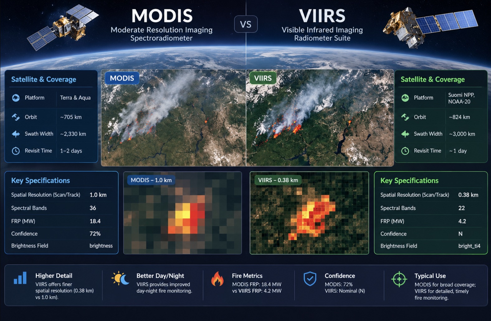

Home
Make two satellites agree about fire.
MODIS and VIIRS both detect fires, but they disagree in ways that look like sensor error and are actually geometry. This is how that disagreement becomes one calibrated number — and the three ways the data tried to fool us along the way.
The idea
Why this is a data problem before it is a machine-learning problem.
A satellite passes over Kenya, sweeps a sensor across the ground, and an algorithm looks for pixels much hotter than their neighbours. When it finds one, it writes a row: latitude, longitude, time, temperature, an estimate of how much energy the fire is radiating. That row is a detection.
Nearly everything that goes wrong in this project comes from one misunderstanding: a detection is not a fire. One burning field produces hundreds of detections across days, satellites and overpasses. Treat each row as a unique fire and your counts are meaningless.
The second problem is that MODIS and VIIRS don't describe the same row the same way.
MODIS reports confidence as 72. VIIRS reports n. One is a
percentage, the other a category. Neither is wrong; they are not the same
measurement, and the obvious move — mapping one scale onto the other — produces a
number that looks precise and means nothing.
FIRMS gives you detections. It does not give you the pixels the satellite looked at and found nothing. So there is no column that says "this was really a fire" — the thing a supervised model would need. Any project claiming to predict "is this a real fire" is quietly inventing its own labels.
So we changed the question to something the data can actually answer:
Given everything VIIRS observed inside a 1 km MODIS footprint, did MODIS report a fire in that footprint during that overpass?
That answer is recorded in the data. It is not ground truth about fire — it is ground truth about what MODIS recorded. That is enough to learn sensor behaviour, and it is the only honest target available.
That one model ends up replacing three separate things:
-
A shared confidence scale. A calibrated probability between 0 and
1 that means the same thing for both sensors. This is what replaces
72%andn. - A matching score. Two detections close in space and time with a high joint probability are probably the same fire. The old distance rule becomes one input among several.
- An explanation for lone detections. "MODIS probably wouldn't have caught this at 1 km" is a very different statement from "MODIS should have, and didn't."
What a row is
The same fire, seen by two instruments, four minutes apart.

FRP stands for fire radiative power: how much energy the fire is radiating, in megawatts. It is an integral over the pixel's area, which is why the two sensors can report wildly different numbers for the same fire.
| Property | MODIS | VIIRS | What it breaks |
|---|---|---|---|
| Pixel size | 1 km | 375 m | ~7 VIIRS pixels fit inside one MODIS pixel |
| Confidence | 0–100 | l / n / h | not comparable; can't be averaged or thresholded alike |
| FRP | integral over ~1 km² | integral over ~0.14 km² | MODIS looks ~4× "hotter" per pixel |
| Swath | 2,330 km | 3,060 km | VIIRS sees places MODIS never looked |
| Overpass | Terra 10:30 · Aqua 13:30 | 13:30 · 01:30 | Terra has no VIIRS partner within 30 min |
Swath is the width of ground the satellite sweeps as it orbits. It matters more than it looks: MODIS's is narrower, so VIIRS legitimately detects fires in places MODIS simply never imaged. Keep that in mind — it comes back as a trap later.
Why the numbers differ
Nesting, measured rather than assumed.
If MODIS integrates over roughly seven VIIRS pixels, then comparing one MODIS number against one VIIRS number is comparing a room's total light against a single window's. The fair comparison is MODIS against the sum of the VIIRS pixels inside that same footprint.
We checked, on 86 matched pairs:
| Ratio, sum(VIIRS inside footprint) / MODIS | median | mean | 25th pct | 75th pct |
|---|---|---|---|---|
| FRP agreement once areas are matched | 1.05 | 1.27 | 0.51 | 1.70 |
A median of 1.05 means the two sensors agree almost exactly once you compare the same physical quantity. That single number did two things: it justified the harmonization approach, and it handed us a free baseline for FRP calibration.
The spread — 0.51 to 1.70 — is the part worth modelling. It is not noise; it is geometry and conditions, which is exactly what the feature set is built to capture.
Building the labels
One row per VIIRS detection, labelled by whether MODIS agreed.
We anchor on VIIRS for a practical reason: it detects about 5.4× more than MODIS over the same area. That means anchoring gives you both classes from real observations. Anchoring on MODIS instead would leave you inventing "no fire here" locations, which is exactly the dishonesty we were trying to avoid.
-
01
Take every VIIRS detectionEach becomes one row. Its coordinates and acquisition time are the query.
-
02
Ask whether MODIS detected nearbyWithin 1.5 km and ±30 minutes. Yes → 1, no → 0.1.5 km covers MODIS's 1 km pixel plus geolocation slack
-
03
Aggregate the neighboursCount, sum and maximum FRP of every VIIRS pixel sharing that footprint within ±5 minutes.this is the nesting, turned into features
-
04
Result1,933 rows, 217 positive (11.2%), 57 spatial cells for cross-validation.
| Group | Columns | What it represents |
|---|---|---|
| Own pixel | frp · bright_ti4 · bright_ti5 · scan · track · conf_ord | what this VIIRS pixel measured |
| Footprint | n_neigh · frp_sum · frp_max · ti4_mean | the total heat MODIS would have integrated |
| Label | modis_detected | did MODIS record a detection here |
Features
Three small decisions that matter more than the choice of model.
Model the log of FRP, not FRP
FRP spans four orders of magnitude in a single fire season — a few tenths of a
megawatt up to hundreds. On a raw scale, one big fire dominates the loss and the
model spends its capacity fitting outliers. log1p compresses the tail
into something the model can learn across its whole range.
Constrain the direction of the physics
LightGBM accepts monotonic constraints: instructions that a feature may only push the prediction one way. Declaring "more FRP never lowers the probability" encodes what we already know about fire. On a sample this small, the model will otherwise find relationships that fit the training fires and mean nothing.
Leave the geometry unconstrained
Scan angle and pixel size get no constraint, deliberately. They are not physics — they are viewing conditions, and we wanted to see what the model did with them. That choice is how we found the swath trap.
Choosing a model
No neural network, and no pretrained weights. Here's why.
The obvious instinct is to reach for a pretrained Earth-observation model. But NASA's Prithvi, SatMAE and similar models consume imagery — multispectral raster patches. Our input is a table of detections, fifteen columns and no pixels. Pretraining pays off when you lack labels but have a large architecture. We have 1,933 rows and thirteen features.
| Task | Baseline | Main model | Reason |
|---|---|---|---|
| Cross-sensor detection | Logistic regression | LightGBM | tabular, nonlinear, handles interactions |
| FRP calibration (planned) | OLS on log-log | LightGBM, robust loss | heavy-tailed target |
| Matching (planned) | Distance + time rule | Logistic regression | explainability beats 1% AUC |
A neural network would lose to gradient boosting on this data, train slower, and cost you an afternoon of tuning. The honest answer is a well-constrained boosted tree, compared against a model you can read.
Results
Same model, two evaluations — and the difference is the whole point.
Before the numbers, one definition. PR-AUC is the area under the precision-recall curve. We use it instead of accuracy because 88.8% of rows are negative: a model that always says "no fire" scores 88.8% accuracy and is worthless. The floor for PR-AUC here is the base rate, 0.110.
The same model, scored two ways
| Split | Model | PR-AUC | ROC-AUC | Brier |
|---|---|---|---|---|
| random (optimistic) | logistic | 0.578 | 0.812 | 0.071 |
| random (optimistic) | LightGBM | 0.825 | 0.952 | 0.041 |
| grouped CV (honest) | logistic | 0.419 | 0.735 | 0.085 |
| grouped CV (honest) | LightGBM | 0.479 | 0.793 | 0.081 |
| grouped CV (honest) | base rate | 0.110 | 0.500 | 0.101 |
What each column can do alone
| Feature | ROC-AUC | PR-AUC | Reading |
|---|---|---|---|
frp_sum | 0.786 | 0.409 | footprint beats the single pixel |
frp_max | 0.780 | 0.449 | strongest single feature |
n_neigh | 0.754 | 0.353 | fire size matters |
frp (own pixel) | 0.692 | 0.240 | worse than the sum |
conf_ord | 0.510 | 0.131 | a coin flip |
scan | 0.273 | 0.079 | inverted — a confounder, not a signal |
VIIRS confidence predicts cross-sensor agreement at 0.510 ROC-AUC
— indistinguishable from chance. When LightGBM was fitted on all features, it made
zero splits on confidence. It had the option and declined. That is
the strongest available argument that harmonized confidence has to be
learned, not rescaled from l/n/h.
Which features earn their place
| Feature set | Logistic | LightGBM | Note |
|---|---|---|---|
| physics | 0.385 | 0.486 | no geometry at all |
| physics + night | 0.419 | 0.472 | |
| physics + geometry + night | 0.419 | 0.479 | the set we trust |
| physics + geometry + time | 0.405 | 0.561 | inflated by a leak — see below |
What LightGBM actually leaned on
The two most-used features are geometry, not physics: the model's favourite trick was "VIIRS was near its swath edge, so MODIS wasn't looking." That is the second trap.
Three traps
Each was found in the data rather than predicted, and each would have inflated the result without anyone noticing.
1. A random split flatters you by 72%
One fire produces hundreds of near-identical rows in adjacent pixels. Split randomly and the model sees one pixel in training and its neighbour in testing. It isn't learning sensor behaviour; it is recognising a fire it has already met.
Holding out whole 1° cells instead, LightGBM drops from 0.825 to 0.479
— a gap of +0.346 PR-AUC. Notice that logistic regression degrades
less (+0.159). Simpler models have less capacity to memorise, which is
why they flatter themselves less.
2. "MODIS saw nothing" often means "MODIS wasn't there"
MODIS's swath is 2,330 km; VIIRS's is 3,060 km. Near VIIRS's swath edge, MODIS was not looking. So a label of 0 can mean absent from the observation rather than absent from the world — and the model happily learns the difference between those as if it were fire behaviour.
| VIIRS scan bin | pixel size | positive rate |
|---|---|---|
| near-nadir | 0.38 km | 23.9% |
| low | 0.43 km | 12.9% |
| high | 0.49 km | 2.2% |
| swath edge | 0.61 km | 4.6% |
A 10× collapse. And when we restricted to narrow scan angles, the predictive power of
scan fell back toward 0.5 — confirming it was measuring coverage, not
fire. --max-scan is a first-order mitigation; the real fix needs
per-granule swath geometry.
3. Day-of-year is a date in disguise
With five days of data, doy is effectively an identifier for the
acquisition date. Our grouped cross-validation holds out space but not time, so the
same days appear in both halves and day-specific conditions leak across cells.
The tell is an asymmetry: adding doy lifts LightGBM from 0.479 to 0.561
and does nothing at all for logistic regression. A feature that only helps the
high-capacity model is a leak, not signal. It is out of the trusted feature set until
we have enough seasons for a temporal hold-out.
Limits
Stated plainly, because being caught out is worse than being early.
| Limitation | What it means in practice |
|---|---|
| Absence is ambiguous | No MODIS detection may mean cloud, swath gap, or a fire too small for 1 km — not "no fire." |
| Five days, one region | Exploratory, not a training set. 217 positives is thin enough that fold-to-fold variance is real. |
| No temporal hold-out yet | Blocked on backfilling seasons; until then date-style leakage is mitigated, not eliminated. |
| Uncalibrated probabilities | LightGBM outputs scores, not probabilities. Calibration is required before this can serve as a confidence scale. |
| Internal consistency only | Improved agreement between two sensors does not prove better real-world fire detection. No independent ground truth was used. |
| East Africa only | Thresholds may not transfer to other biomes without re-fitting. |
That fifth row is the one to keep in front of you. Every number on this page describes agreement between two sensors, not accuracy against reality. They are different claims, and conflating them is the most common way a project like this misleads its audience.
What's next
Ordered by how much each step improves trust in the result.
-
01
Backfill two to three fire seasonsUnlocks a real temporal hold-out and gives the boosted model enough rows to justify itself. Roughly 220 API calls per source, now parallel.biggest single gain in trust
-
02
Calibrate the probabilitiesIsotonic regression on a held-out fold, then a reliability diagram. The probability is the deliverable.
-
03
Control coverage properlyRestrict anchors to regions MODIS actually imaged, instead of the blunt scan filter.
-
04
Harmonize FRPRegress MODIS FRP on summed VIIRS FRP plus geometry. The 1.05 median is already a strong baseline.
-
05
Ship a versioned artifactA
joblibbundle with feature list, thresholds and a documented input/output contract the backend can call.
Run it
Everything on this page comes from these commands.
# setup (Python 3.14) cd ML python3 -m pip install -r requirements.txt cp .env.example .env # paste your FIRMS MAP_KEY # fetch -> label -> train python3 -m terrawatch all --start 2023-02-10 --end 2023-02-15 # or one stage at a time python3 -m terrawatch fetch --start 2023-02-10 --end 2023-02-15 python3 -m terrawatch labels --start 2023-02-10 --end 2023-02-15 python3 -m terrawatch train --start 2023-02-10 --end 2023-02-15 # verify python3 -m pytest # 21 passed
--end is exclusive, matching Python slicing. Module responsibilities are
documented in README.md.